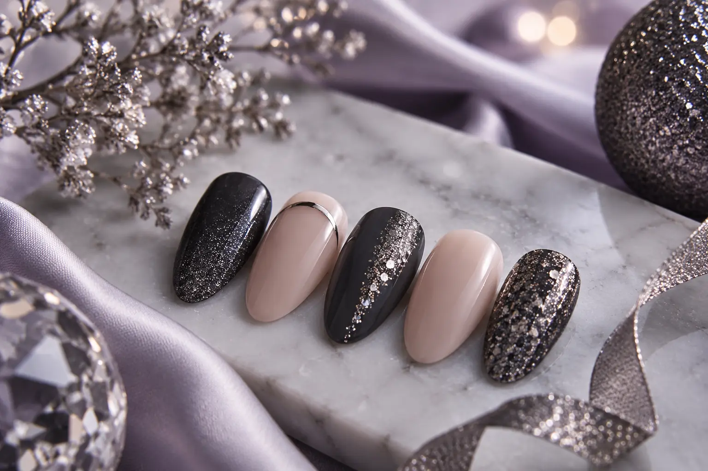

Nagų dizainas Naujųjų metų renginiui: blizgesys, akcentai ir darbų apimtis
Autorius: Madbeauty redakcija · Numatyta 2026 m. lapkričio 24 d. 10:00 (Lietuvos laiku)
Palyginkite tris blizgesio ir akcentų variantus tai pačiai nagų formai, tada aiškiai sutarkite darbų apimtį.

Renkantis nagų dizainą Naujųjų metų renginiui, pradėkite nuo trijų sprendimų: kokio paviršiaus efekto norite, kur bus pagrindinis akcentas ir kas įeina į pasirinktą paslaugą. Lengviau palyginti variantus, kai nagų forma ir bazinė spalva lieka tos pačios, o keičiate tik vieną dizaino dalį.
Blizgesys gali reikšti kelis skirtingus įspūdžius
„Blizgu“ nėra vienas konkretus dizainas. Vienas variantas – tolygus blizgus paviršius be papildomo rašto. Kitas – smulkus žvilgesys per visus nagus. Dar kitoks įspūdis susidaro, kai blizgesys sutelkiamas į atskiras detales ar vieną nagą. Tai vizualūs pasirinkimai; vien iš jų pavadinimo nereikėtų spręsti, kokia priemonė ar darbų apimtis bus naudojama.
Jei norite santūresnio rezultato, rinkitės vieną pagrindinį efektą, pavyzdžiui, vienodą žvilgesį per visą paviršių. Jei norite ryškesnio akcento, palikite pagrindą paprastesnį ir nuspręskite, ant kurių nagų akcentas bus matomas.
Akcento vieta keičia viso dizaino ritmą
Akcentą galima paskirstyti per visus nagus arba sutelkti vienoje vietoje. Vienas ryškesnis nagas ant kiekvienos rankos sukuria aiškų centrą. Pasikartojanti plona linija ar mažas elementas ant kelių nagų atrodo nuosekliau, bet reikalauja tiksliai sutarti, kur ir kiek detalių bus daroma. Jei norite, kad akcentas būtų subtilus, apibūdinkite jo vietą ir dydį, o ne vien pasakykite „šventinis“.
Trys variantai tai pačiai nagų formai
Pavyzdžiui, palikime trumpą ovalią formą ir tą pačią bazinę spalvą. Toliau keiskime tik blizgesio pasiskirstymą. Tai idėjiniai pavyzdžiai, o ne konkretaus meistro darbai ar garantuoto rezultato pažadas.
- Tolygus žvilgesys: smulkus blizgesys paskirstytas per visus nagus. Tinka, jei norite vientiso efekto be atskiro ryškaus akcento.
- Vienas akcentas ant kiekvienos rankos: didesnis žvilgesys sutelktas į po vieną pasirinktą nagą, kiti lieka ramesni. Prieš vizitą nurodykite, kuriuos nagus turite omenyje.
- Plona metalinė detalė: blizgus pagrindas ir siaura sidabrinė ar auksinė linija ant pasirinktų nagų. Iš anksto sutarkite, kiek nagų ji puoš ir kokios vietos norite.
Palyginimui galite parodyti šiuos tris variantus vienoje nuotraukoje arba eskize. Taip išlieka aišku, kad keičiasi akcentas, o ne forma, ilgis ar bazinė spalva.
Sutarkite paslaugos apimtį atskirai nuo dizaino idėjos
Dizaino pavadinimas pats savaime nepasako, kas įskaičiuota į vizitą. Peržiūrėkite konkretaus teikėjo paslaugos aprašą ir patikslinkite, kokie darbai bus atliekami. Jei aktualu, aptarkite senos dangos nuėmimą, norimą ilgį, pasirinktos dangos tipą ir kiek nagų bus puošiama. Kainos ar trukmės nereikėtų numanyti vien iš žodžių „šventinis dizainas“.
Jei lyginate pasiūlymus, padės gidas „Kas įeina į manikiūro kainą“. O spalvos pasirinkimui galite remtis gidu „Kaip pasirinkti nagų spalvą“.
Kaip paaiškinti norimą rezultatą
Atsiųskite vieną įkvėpimo nuotrauką ir trumpai pažymėkite, ką norite išsaugoti: spalvą, blizgesio kiekį, akcento vietą ar bendrą nuotaiką. Taip pat nurodykite, ką galima pritaikyti prie pasirinkto ilgio ar formos. Nuotrauka padeda aptarti kryptį, bet savaime negarantuoja identiško rezultato. Daugiau apie tai, kaip skaityti darbų pavyzdžius, paaiškina gidas „Kaip vertinti meistro darbų galeriją“.
Jei norite peržiūrėti nacionalinę „Dizainas“ kategoriją, ją rasite Madbeauty kataloge. Tai kategorijos pasirinkimas: miestą reikia pasirinkti atskirai, o pats katalogo puslapis nepatvirtina, kad tame mieste yra teikėjų ar laisvų vizito laikų.
Atverti „Dizainas“ kategoriją.